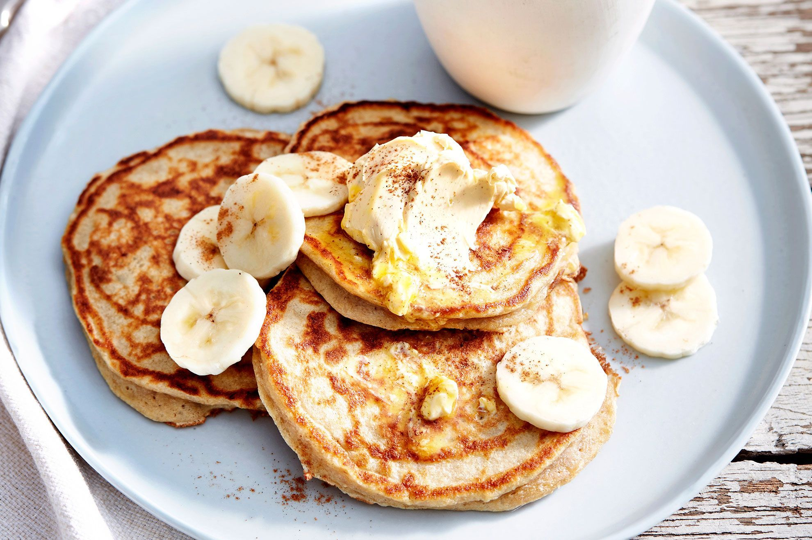

Banana Pancakes

Description
Fluffy on the inside, crispy on the outside and delicately flavored
with bananas, these are phenomenal banana pancakes.
Ingredients
- 1 cup all purpose flour
- 1 tablespoon white sugar
- 2 teaspoons baking powder
- 1/4 teaspoon salt
- 1 egg (beaten)
- 1 cup milk
- 2 tablespoons vegetable oil
- 2 ripe bananas (mashed)
Steps
-
Combine flour, white sugar, baking powder, and salt in a bowl.
Mix together egg, milk, vegetable oil, and bananas in a second bowl.
-
Stir flour mixture into banana mixture; batter will be slightly lumpy.
-
Heat a lightly oiled griddle or frying pan over medium high heat.
Pour or scoop the batter onto the griddle, using approximately 1/4 cup
for each pancake.
-
Cook until pancakes are golden brown, 3 to 5 minutes per side. Serve hot.